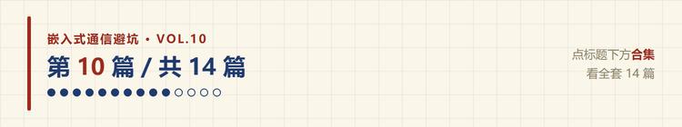
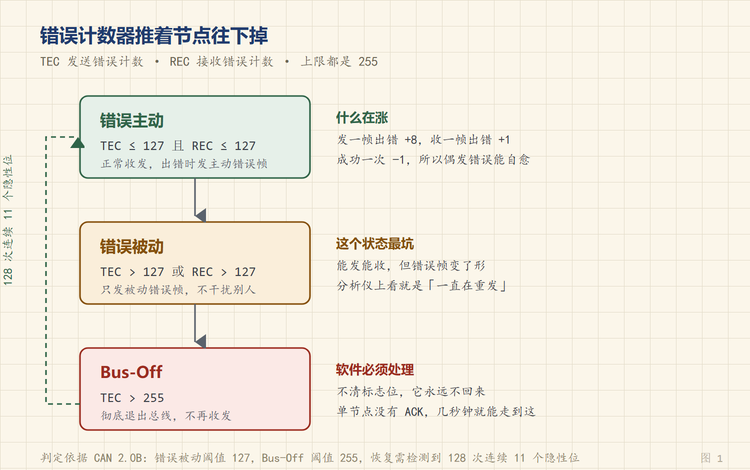

CAN 收不到数据？先看 TEC 和 REC 两个错误计数器
🐵 程序小猴 · 嵌入式通信避坑 Vol.10
通信失败的时候，CAN 控制器自己记着账。

设备装到现场，CAN 就是不通。
换线、换板子、把波特率从 500k 试到 125k，都没用。示波器夹上去，波形也在动。
后来接上分析仪，发现总线上根本没有完整的帧，只有一串破碎的电平。
那个节点早就自己放弃了。
一、先分清是哪一种收不到
「收不到」这三个字下面，至少藏着四种完全不同的故障。
| 现象 | 说明 | 先查 |
|---|---|---|
| 总线一点波形都没有 | 节点压根没在发 | 供电、收发器使能脚、时钟 |
| 有波形，但一直在重发 | 发出去没人应答 | 对端在不在、终端电阻 |
| 对端在发，自己收不到 | 收到但被过滤掉了 | 验收过滤器、屏蔽寄存器 |
| 只能单向通 | 一根线断了或者接反 | CANH/CANL 有没有接反 |
第一种和第四种是硬件问题，万用表就能定位。
第二种和第三种要看软件状态，这时候 TEC 和 REC 就派上用场了。
二、独苗节点，最常见的假故障
先讲一个我踩过的坑。
新板子第一次上电调试，只焊了一块，直接接到 USB-CAN 分析仪上。程序跑起来，示波器上看得到波形，但通信永远不成功。
当时以为是波特率不对，试了一圈。
真实原因很简单，CAN 要求总线上至少有一个节点应答。
发送方在 ACK 槽发隐性，等别人拉成显性。总线上只有自己一个节点，没人应答，这一帧就判为 ACK 错误。
出错之后硬件会自动重发，重发还是没人应答，再错。
而每一次 ACK 错误，发送错误计数器 TEC 都要加 8。
几十帧之后，TEC 就冲到 255，节点进入 Bus-Off，彻底不发。
所以「示波器上有波形」不等于「通信成功」。波形可能只是它在反复重发同一帧。
三、TEC 和 REC 是怎么涨的
CAN 控制器内部有两个 8 位计数器。
- TEC，发送错误计数
- REC，接收错误计数
涨落的规则是固定的。
| 事件 | TEC | REC |
|---|---|---|
| 发送一帧出错 | +8 | — |
| 接收一帧出错 | — | +1 |
| 成功发送一帧 | −1 | — |
| 成功接收一帧 | — | −1 |
注意这个不对称。发送错误加 8，接收错误只加 1。
意思是 CAN 对「发出去的东西有问题」更敏感，因为发的错会污染整条总线，收的错只影响自己。
而成功一次只减 1，说明清零很慢。偶尔错一两帧能自己恢复，连续错就会一路涨上去。
四、三个状态
TEC 和 REC 的数值，决定节点处在哪个状态。
| 状态 | 条件 | 行为 |
|---|---|---|
| 错误主动 | TEC ≤ 127 且 REC ≤ 127 | 正常收发，出错时发主动错误帧 |
| 错误被动 | TEC > 127 或 REC > 127 | 只发被动错误帧，不干扰总线 |
| Bus-Off | TEC > 255 | 完全退出总线，不再收发 |
这里有个反直觉的设计。
节点出了很多错，CAN 不是让它继续大喊大叫，而是让它闭嘴。
错误被动的节点发的错误帧只有 6 个隐性位，不会打断别人的传输。只有它自己知道状态不对，其他节点几乎察觉不到。
这是 CAN 的故障隔离思路，一个坏节点不应该拖垮整条总线。

五、错误被动是最坑的状态
三个状态里，错误被动最难查。
因为它还能发能收。
分析仪上看，帧在发，数据也有，就是偶尔失败。看软件日志，发送返回成功，但对面没收到。
原因在于它的错误帧变了形。正常节点发现错误会发主动错误帧（6 个显性位），能把当前帧废掉，让所有人重传。错误被动的节点只能发被动错误帧（6 个隐性位），废不掉这一帧。
于是错误被忽略，坏数据可能被当成好数据收下。
所以看到「通信时好时坏，重试能过」，先读一下 TEC 和 REC，别在应用层加更多重试逻辑。
六、Bus-Off 之后怎么办
TEC 超过 255，节点进入 Bus-Off，硬件层面自动退出总线。
这时候它会做一件事，监听总线，数隐性位。
连续检测到 128 次「11 个连续隐性位」，才允许重新加入。
为什么是 11 个，因为 11 个隐性位只有在总线空闲的时候才可能出现，说明大家都发完了，现在是安全的重启时机。
但软件必须处理这件事。
很多 MCU 的 CAN 外设，Bus-Off 之后不会自动恢复，需要软件清除标志位，或者重新初始化外设。
如果代码里没写这段，表现就是「上电正常，跑一会儿彻底不通信，重启才好」。
七、按计数器反推原因
这是最实用的一步。读一次 TEC 和 REC，基本能定位方向。
| TEC | REC | 大概是什么问题 |
|---|---|---|
| 涨得快 | 不动 | 发送侧，没人 ACK、位错误、终端电阻缺失 |
| 不动 | 涨得快 | 接收侧，CRC 错、格式错、对端发送有问题 |
| 都涨 | 都涨 | 物理层，接线、共地、干扰、阻抗不匹配 |
| 都是 0 | 都是 0 | 根本没在通信，配置或使能没打开 |
第一种最常见。TEC 涨、REC 不动，说明自己发的东西总被认为是错的，或者没人应答。
第二种说明总线上的数据本身有问题，别人发的你收不干净。
第三种最麻烦，两边都受影响，基本可以确定是物理层。
第四种反而好办，去看收发器使能脚和时钟配置。
八、物理层先查这三件
计数器指向物理层的时候，按这个顺序查。
终端电阻。 总线两端各一个 120Ω。断电量 CANH 和 CANL 之间的电阻，正常接近 60Ω。测出来 120Ω 说明只装了一端，测出来 40Ω 说明多装了。
共地。 两个节点供电系统不同，地电位差几十伏很常见。CAN 收发器的共模范围是 -2V 到 +7V（高速 CAN），超出去就收不干净。要么共地，要么用隔离收发器。
支线长度。 从主干分出去的那一小段，越长越容易反射。500k 以下建议不超过 0.3 米，1M 的时候要更短。
很多所谓「软件 CAN 问题」，最后拿示波器一看，波形已经严重变形。
九、按这个顺序查

| 顺序 | 查什么 | 怎么查 | 典型现象 |
|---|---|---|---|
| ① | 总线上有没有别的节点 | 接分析仪看有没有人应答 | 单节点永远发不出去 |
| ② | TEC 和 REC 是多少 | 读寄存器 | 定位是发送侧还是接收侧 |
| ③ | 终端电阻 | 断电量 CANH-CANL | 60Ω 正常，120Ω 少一个 |
| ④ | CANH/CANL 有没有接反 | 对照手册量电压 | 完全收不到 |
| ⑤ | 波特率和采样点 | 分析仪看实际位宽 | 能发不能收 |
| ⑥ | 过滤器配置 | 检查验收码和屏蔽码 | 别人能收你收不到 |
| ⑦ | 错误状态 | 主动/被动/Bus-Off | 时好时坏或彻底停 |
第 ② 步最快。不用拆机壳，软件里读两个变量就有结果。

CAN 的可靠性，很大一部分来自这两个计数器。
它不指望节点永远不犯错，而是假设节点会坏，然后给它设计一条体面的退出路径。
你遇到的「CAN 收不到」，最后是哪个原因？评论区说说。
📌 这是「嵌入式通信避坑」第 10 篇，全系列 14 篇，从串口一路讲到 CAN 和无线选型。
💬 觉得有用就点个在看，下一篇讲一根线挂一串器件，1-Wire 是怎么做到的。